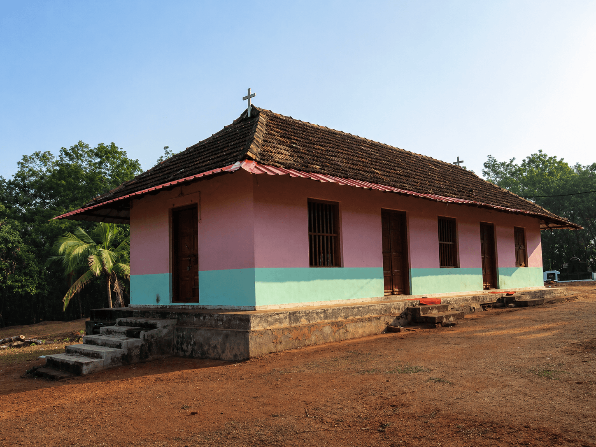
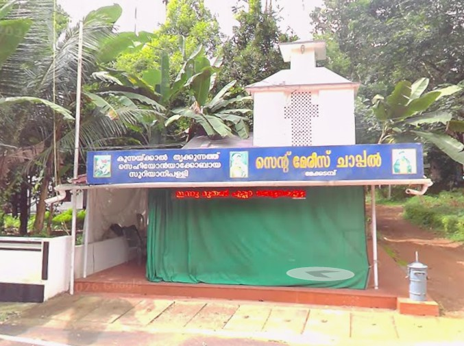
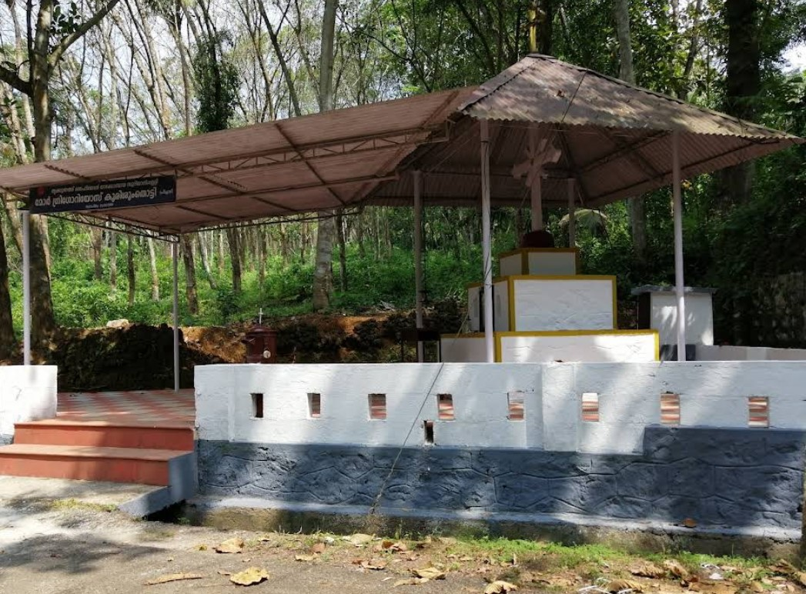
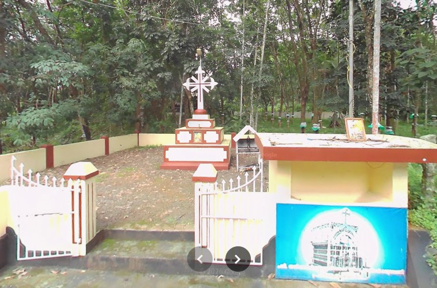
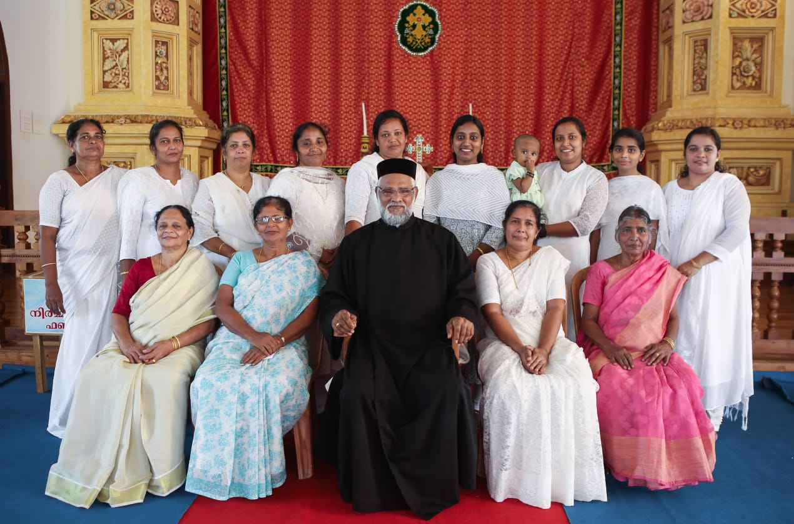
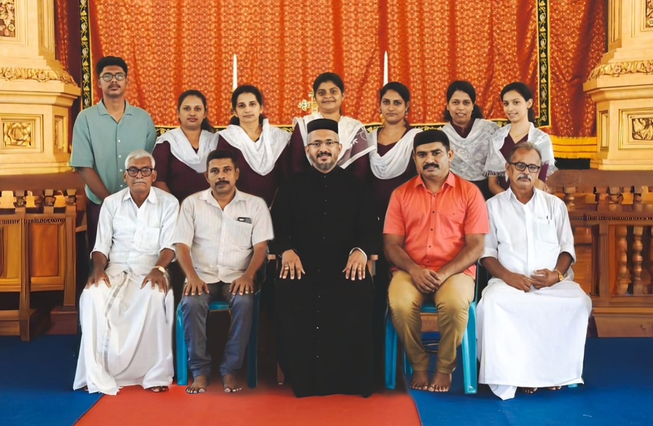
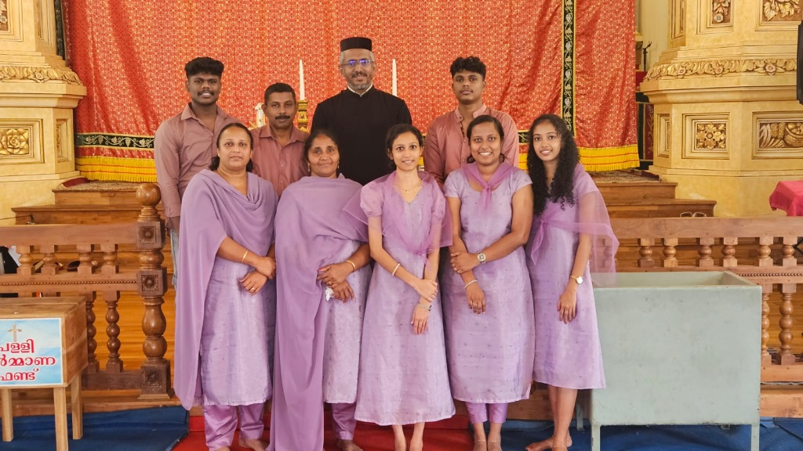

Every Sunday
Holy Mass
8:00 AM at Churchകുന്നക്കൽ സെഹിയോൻ ഇടവക നിങ്ങളെ സ്വാഗതം ചെയ്യുന്നു
Welcome to
Welcome to Thrikkunathu Sehiyon Jacobite Syrian Church, a vibrant community of faith rooted in the ancient traditions of the Syrian Orthodox Church. Located in Kunnackal, our church serves as a spiritual home for families and individuals seeking to deepen their relationship with God through worship, fellowship, and service.
We are committed to preserving our rich heritage while embracing the challenges and opportunities of the modern world. Our congregation is dedicated to living out the teachings of Christ in our daily lives, fostering a welcoming environment for all who seek spiritual growth and community.
Read MoreHoly Mass
8:00 AM at ChurchHoly Mass
7:00 AM at St. Mary's ChapelSunday School
11:00 AM at ChurchInitial organization and pursuit of formal recognition.
Official establishment of St. George Jacobite Syrian Church.

Original Church (1932)Spiritual growth, community expansion, and decades of dedicated service.
Completion and consecration of our new church building.
A thriving pillar of community faith, worship, and spiritual guidance for generations.
Together in faith and service for the growth of our church and the glory of God.
Rev. Fr. Jacob Molathu
Mathew K P
V V Jose
Church Committee Members
Sacred spaces dedicated to prayer, worship, and spiritual communion.



Serving our community through faith, compassion, and dedicated ministry.

Women's Association

Faith Formation for Children
Engaging Young Adults
Strengthening Family Bonds

Liturgical Music & Praise
Watch the recording of the a Holy Qurbana at Thrikkunathu Sehiyon Jacobite Syrian Church.